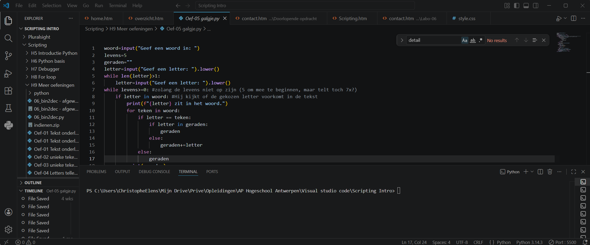
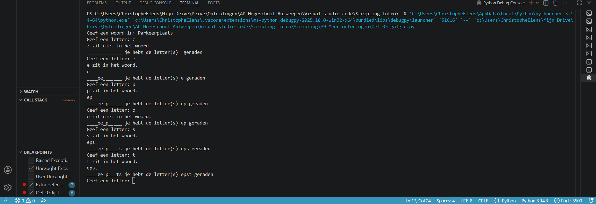

Project: galgje
Een stukje code waar ik enige tijd mee bezig ben geweest om die te programmeren is het spelletje Galgje: Hierin was het de bedoeling dat je 5 levens hebt: Je kan dus 5 keer raden welke letter in het verborgen woordje zit.


Het resultaat hiervan zie je in de terminal van Microsoft's Visual Studio ©: Een uitdagend stukje code waar toch even moest over nagedacht worden: de resultaten moeten opgeslagen worden in variabelen en mogen het voorgaande resultaat niet zomaar overschijven. Zeker als er een foute letter geraden wordt!